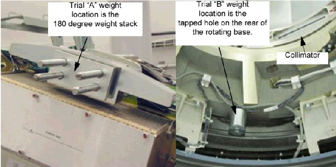
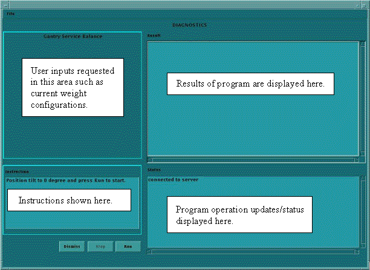
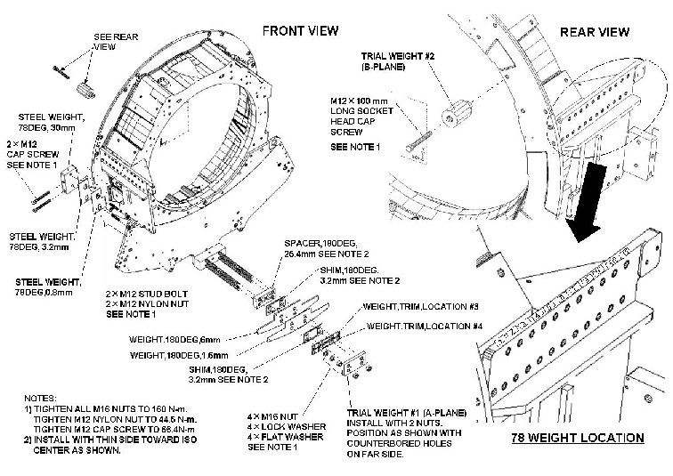
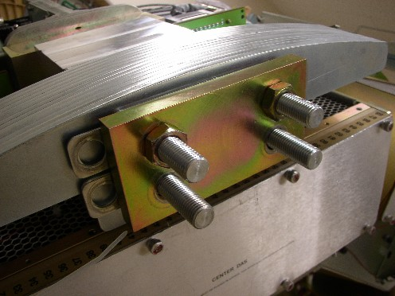
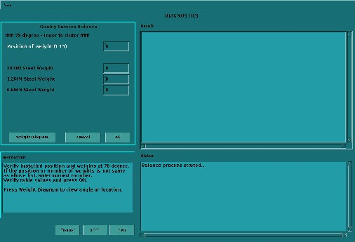

Operating Documentation
Direction 5196839-800, Rev# 6
RT16 and Xtra Service Info Adv
Operating Documentation |
| Required Persons | Preliminary Reqs | Procedure | Finalization |
|---|---|---|---|
| 1 | Timing Not Applicable | Timing Not Applicable | Timing Not Applicable |
This procedure should be performed any time the rotating gantry is serviced. It is intended to:
Check or create sensitivity matrix
Balance the gantry in both static and dynamic vectors.
| To perform the gantry balance: | |
| 1. | Remove gantry front and rear covers. |
| 2 | Launch Service Gantry Balance Program. |
| 3. | Carefully follow directions within the program. |
| 4. | Torque all fasteners. |
| 5. | Assemble Gantry. |
| Item | Qty | Effectivity | Part# | Manufacturer | |
|---|---|---|---|---|---|
| Torque wrench kit | 1 | - | 46-268445G1 | - | |
| Gantry Balance Weight Kit | 1 | - | 2381045 | - | |
| DAS debris shields | 1 set | - | (Part of Balance Kit) | - | |
| Deep well Socket 1/2" drive | 1 | - | (Part of Balance Kit) | - | |
| 1/2" drive torque wrench (Must order this torque wrench from the tool depot. The field torque kit does not have the capacity required for the balance weight fasteners.) | 1 | - | 46-268521G1 | - | |
| Use the DAS Debris Shields to prevent metal shaving from contaminating
the DAS Chassis. These shields can be used with the DAS fans running. Remove
debris shields before rotating the gantry. See
Illustration 1. The weights for gantry balance are installed at two locations-at 78 and 180 degrees. Illustration 2 shows the 78-degree weights. | |
| The order from back to front of the specific balance weights is shown
in
Illustration 5. The balance program
will determine the number of each specific weight. The physical order from
front to back is critical and cannot be altered. A quantity of 0 (zero) is
a valid number for specific weights. Each specific weight is defined by its
base metal, generic name, location angle and thickness in mm. Example:
| |
Read and observe the Notices above, where required.
Illustration 1: DAS Debris Shield

Illustration 2: Balance Weight at 78-degree Location

| NOTE: | You may not have all plate types installed on your gantry depending on what is needed to balance your gantry. |
Illustration 3: Trial Weight A and B mounting locations

Position the table to its lowest position.
Remove the gantry side, top, front and rear covers.
Launch the Service Gantry Balance program from the Service Desktop, Diagnostics tab.
Illustration 4: Sample Gantry Balance GUI

Select Run to start the gantry balance procedure.
| NOTE: | Follow the on screen instructions exactly as stated. Failure to follow the steps may result in having to start the procedure from the beginning. |
If the sensitivity matrix does not exist or the gantry is out of balance, the program will ask you to enter the current weight configuration prior to performing the steps to generate a new sensitivity matrix. See Illustration 7 for example of entries for 78° weight stack. The 180° weight stack appears in the similar manner.
| NOTE: | There is a weight diagram available via the "Weight Diagram" button in the GUI. See Illustration 5. The diagram shown on the product supersedes any listing in this procedure. Pay close attention to Note 2 for the 180° 25.4mm spacer and 3.2mm shim orientation. The holes are shifted to one side and should be installed with the holes closest to the edge on the bottom near the DAS. |
Illustration 5: Sample Weight Diagram

Refer to Illustration 3 for Trial weight placement during sensitivity matrix generation process. Program will ask you to place each of the two trial weights one at a time during the process. Trial weight A at 180° position must be installed over top of the existing weight stack nuts such that existing nuts are in recessed holes of trial weight. Install trial weight as shown in the Weight Diagram on the system. This is the configuration and weight components expected by the program. See also Illustration 6.
Illustration 6: Installation of Trial Weight A

Illustration 7: Request for existing weight configuration

| NOTE: | The order of the balance weights as installed on the gantry is
very important. An entry of zero is valid if the particular weight type is
not currently installed. The program will ask or instruct the user about the number of specific weights in both 78 and 180-degree locations. The order is labeled as "inner to outer" with inner referring to weights closest to the gantry (rear) and outer as towards the table (front). |
Follow the steps as stated in the "Result" portion of the GUI screen as you proceed through the Gantry Balance procedure. Those steps will not be included here as they may change from release to release of the product.
See Table 1 for example questions and messages that may come up depending on system status and answers to other questions during program execution. Message wording may not be exactly the same as shown below.
Table 1: Gantry Balancing - Example Questions/Messages
| Question/Message | Notes |
| Balance verification is skipped because a sensitivity matrix data file does not exist. | Per message program recognizes that it must first generate a sensitivity matrix prior to balance and will step you through the process. |
| Has gantry configuration been changed since last balanced? | If you select "Yes", the program will ask you to verify installed weights prior to running balance verification. If "No" then program proceeds to balance verification. |
| The gantry is balanced to Factory Specifications. Do you want to improve gantry balance? | User is given the opportunity to run another iteration if desired. Gantry is balanced very well at this point so no further action is necessary. This is primarily for Factory needs. |
| The gantry is balanced to Field Specifications. Do you want to improve gantry balance? | User is given the opportunity to run another iteration if desired. Gantry is balanced but if results are close to Field spec boundary may not allow Detailed Cal if balance check run by cals vary out of Field Spec. |
| The gantry is not balanced. Do you want to retry? | Need to continue with another iteration. After 3 iterations if the gantry is not balanced, then other system problems or errors in entries are causing the program to fail to converge on a balance weight configuration. Some Possible causes: Verify proper entry of weight stack information, check covers on gantry sensors, possible corrupted sensitivity matrix may need to regenerate. |
| Click Save to update new weight configuration and exit. Click No Save only to exit. | Unless there is a problem, click Save to store results and finish Gantry Balance. |
When the Gantry Balance procedure indicates a passing result save the updated configuration information and exit the program.
| IMPACT HAZARD. | |
| FAILURE TO TORQUE TRIM WEIGHT FASTENING HARDWARE WILL RESULT IN DAMAGING PROJECTILE EVENTS THAT WILL RESULT IN SEVERE EQUIPMENT DAMAGE AND POSSIBLE PERSONAL INJURY. | |
| Torque all fasteners to proper levels. |
| NOTE: | Refer to "Gantry Service Balance Theory" for explanation regarding torque as it applies to this area. |
Make sure to torque all fasteners as instructed.
Be sure the nuts on four threaded rods are tight in the 180-degree location. Use the Torque wrench ordered from the tool depot to tighten nuts to 160N-m (118 ft-lbs). This torque wrench is a 1/2" drive to match the deep well socket and is capable of 250 ft-lbs.
In the 78-degree location, tighten the two M12 nuts to 44.5N-m (32.8 ft-lbs), and tighten the two M12 cap screws to 66.4N-m (48.9 ft-lbs).
Be aware that adjacent nuts might loosen when a nut is tightened due to the springiness of the stack. Use a diagonal type pattern (similar to tightening tire lug nuts) to tighten the nuts and go back to verify all are still torqued properly when complete. Refer to Gantry Balance Theory for further discussion regarding the importance of torque on the weights.
Assemble gantry.
Perform FASTCAL and ensure no pop-up windows occur and gesyslog is error free.